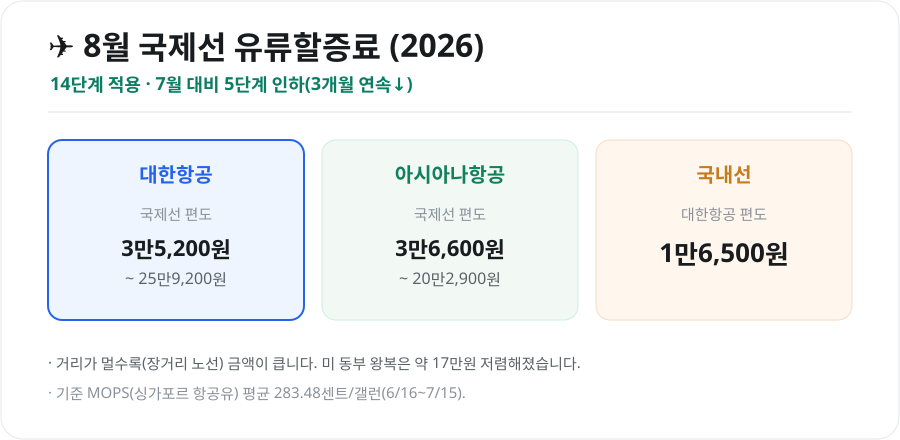

N
네이버 실시간
G
구글 실시간
키워드픽 블로그 — 지금 뜨는 이슈 깊이 보기
전체 글 보기 →키워드픽은 매일 구글·네이버에서 화제가 되는 검색어를 살펴보고, 그 배경과 맥락을 직접 정리해 알기 쉽게 풀어 씁니다. 단순 순위 나열이 아니라 ‘왜 이 키워드가 떴는지’, ‘무엇을 알아두면 좋은지’까지 담았습니다.

생활유류할증료 총정리 (2026년 8월) — 국제선 3개월 연속 인하·발권 타이밍 꿀팁2026년 8월 국제선 유류할증료가 14단계로 7월 대비 5단계 인하돼 3개월 연속 내렸습니다. 대한항공·아시아나·국내선 금액, 산정 원리(MOPS), 발권일 기준 절약 팁과 9월 전망을 정리했습니다.2026-08-04 생활연말정산 완벽 가이드 — 소득공제·세액공제 차이부터 놓치기 쉬운 공제까지'13월의 월급' 연말정산, 소득공제와 세액공제의 차이, 일정, 신용카드·연금계좌·의료비·월세 등 놓치기 쉬운 주요 공제를 초보자도 이해하도록 정리했습니다.2026-08-03
생활연말정산 완벽 가이드 — 소득공제·세액공제 차이부터 놓치기 쉬운 공제까지'13월의 월급' 연말정산, 소득공제와 세액공제의 차이, 일정, 신용카드·연금계좌·의료비·월세 등 놓치기 쉬운 주요 공제를 초보자도 이해하도록 정리했습니다.2026-08-03 생활근로장려금 총정리 (2026) — 가구별 소득기준·최대 지급액·신청 방법근로장려금 2026년 가구 유형별 소득기준(단독 2,200만·홑벌이 3,200만·맞벌이 4,400만)과 최대 지급액(165·285·330만원), 재산 요건, 정기신청 일정·지급일까지 한눈에 정리했습니다.2026-08-03
생활근로장려금 총정리 (2026) — 가구별 소득기준·최대 지급액·신청 방법근로장려금 2026년 가구 유형별 소득기준(단독 2,200만·홑벌이 3,200만·맞벌이 4,400만)과 최대 지급액(165·285·330만원), 재산 요건, 정기신청 일정·지급일까지 한눈에 정리했습니다.2026-08-03 생활자동차세 연납 총정리 (2026) — 1월 5% 할인·신청 방법·시기별 공제율자동차세를 1년치 미리 내면 세액을 깎아주는 연납 제도. 2026년 1월 신청 시 5% 공제, 분기별 할인율 차이, 위택스·앱·ARS 신청 방법과 주의점을 정리했습니다.2026-08-03
생활자동차세 연납 총정리 (2026) — 1월 5% 할인·신청 방법·시기별 공제율자동차세를 1년치 미리 내면 세액을 깎아주는 연납 제도. 2026년 1월 신청 시 5% 공제, 분기별 할인율 차이, 위택스·앱·ARS 신청 방법과 주의점을 정리했습니다.2026-08-03 생활전기차 보조금 총정리 (2026) — 차값별 국고보조금·추가지원·신청 방법2026년 전기차 보조금을 차량 가격 구간별 국고보조금(5,300만원 미만 100%), 전환지원금·다자녀·지자체 합산까지 한눈에 정리했습니다. 신청 방법과 선착순 마감 주의점도 담았습니다.2026-08-03
생활전기차 보조금 총정리 (2026) — 차값별 국고보조금·추가지원·신청 방법2026년 전기차 보조금을 차량 가격 구간별 국고보조금(5,300만원 미만 100%), 전환지원금·다자녀·지자체 합산까지 한눈에 정리했습니다. 신청 방법과 선착순 마감 주의점도 담았습니다.2026-08-03 생활국가장학금 신청 총정리 (2026) — 소득분위별 지원금·신청 기간·성적 기준2026년 국가장학금 1유형 소득분위(학자금 지원구간)별 지원금액, 신청 기간(학기별), 성적 기준, 신청 절차를 한눈에 정리했습니다. 가구원·금융정보 동의까지 놓치지 마세요.2026-08-03
생활국가장학금 신청 총정리 (2026) — 소득분위별 지원금·신청 기간·성적 기준2026년 국가장학금 1유형 소득분위(학자금 지원구간)별 지원금액, 신청 기간(학기별), 성적 기준, 신청 절차를 한눈에 정리했습니다. 가구원·금융정보 동의까지 놓치지 마세요.2026-08-03 생활청년내일저축계좌 총정리 (2026) — 자격·정부지원금·3년 1,440만원 만들기청년내일저축계좌는 월 10만원을 저축하면 정부가 최대 30만원을 얹어줘 3년 뒤 약 1,440만원을 만드는 자산형성 지원 사업입니다. 2026년 가입 자격·소득 요건·신청 방법을 정리했습니다.2026-08-03
생활청년내일저축계좌 총정리 (2026) — 자격·정부지원금·3년 1,440만원 만들기청년내일저축계좌는 월 10만원을 저축하면 정부가 최대 30만원을 얹어줘 3년 뒤 약 1,440만원을 만드는 자산형성 지원 사업입니다. 2026년 가입 자격·소득 요건·신청 방법을 정리했습니다.2026-08-03 생활광복절 대체휴무(8월 17일), 진짜 쉬나요? — 대체공휴일 대상·휴일수당 정리2026년 광복절(8월 15일 토)이 토요일과 겹쳐 8월 17일(월)이 대체공휴일입니다. 대체휴무가 왜 생기는지, 누가 쉬는지(5인 이상·미만), 이날 일하면 받는 휴일근로수당까지 정리했습니다.2026-08-03
생활광복절 대체휴무(8월 17일), 진짜 쉬나요? — 대체공휴일 대상·휴일수당 정리2026년 광복절(8월 15일 토)이 토요일과 겹쳐 8월 17일(월)이 대체공휴일입니다. 대체휴무가 왜 생기는지, 누가 쉬는지(5인 이상·미만), 이날 일하면 받는 휴일근로수당까지 정리했습니다.2026-08-03 생활국가건강검진 대상 조회 (2026) — 짝수년생 대상·6대 암검진·조회 방법 총정리2026년 국가건강검진은 짝수년생이 대상입니다. 일반건강검진 대상·조회 방법(The건강보험 앱), 6대 암검진 나이·주기, 비용과 미수검 시 주의점까지 한눈에 정리했습니다.2026-08-03
생활국가건강검진 대상 조회 (2026) — 짝수년생 대상·6대 암검진·조회 방법 총정리2026년 국가건강검진은 짝수년생이 대상입니다. 일반건강검진 대상·조회 방법(The건강보험 앱), 6대 암검진 나이·주기, 비용과 미수검 시 주의점까지 한눈에 정리했습니다.2026-08-03